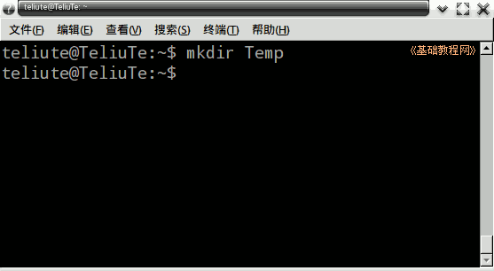
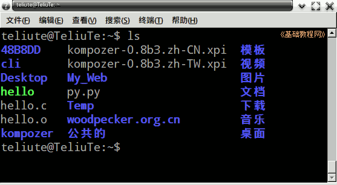
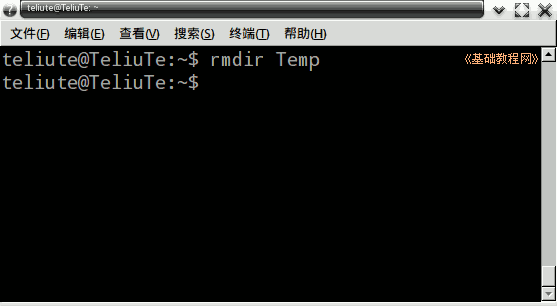
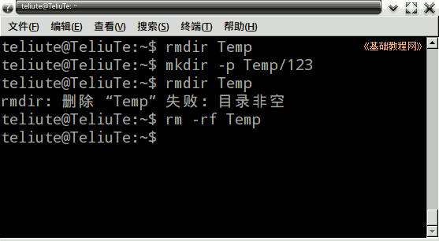

Ubuntu 命令行教程
作者：TeliuTe 来源：基础教程网
七、mkdir 创建文件夹 返回目录 下一课这个命令用于在当前文件夹里，创建一个文件夹；
1、mkdir 命令
1）打开终端窗口，显示当前为主文件夹；
2）输入命令 mkdir Temp 注意区分大小写字母，没什么提示就是成功了；

3）用 ls 命令，可以看到新建的文件夹；

2、rmdir 删除文件夹
1）这个命令可以删除一个空文件夹，输入命令 rmdir Temp

2）对于非空的，里面有文件的文件夹，使用 rm -rf Temp 命令，
这个 rm 命令会强制删除文件和文件夹，比较危险，一定要仔细检查后运行；

本节学习了创建和删除文件夹的基础知识，如果你成功地完成了练习，请继续学习下一课内容；
本教程由86团学校TeliuTe制作|著作权所有
基础教程网：http://teliute.org/
美丽的校园……
转载和引用本站内容，请保留作者和本站链接。